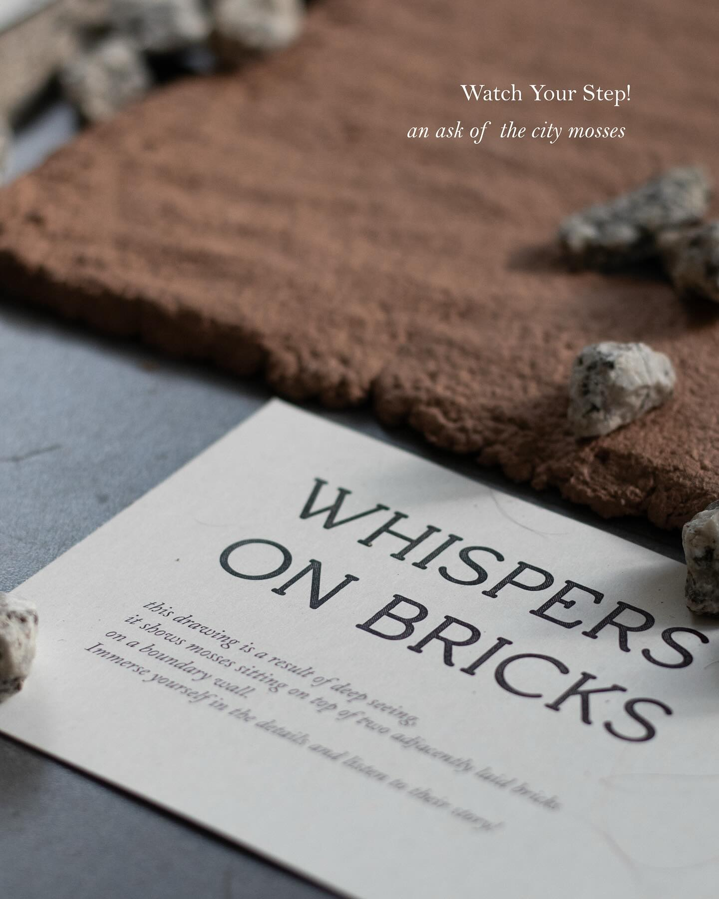
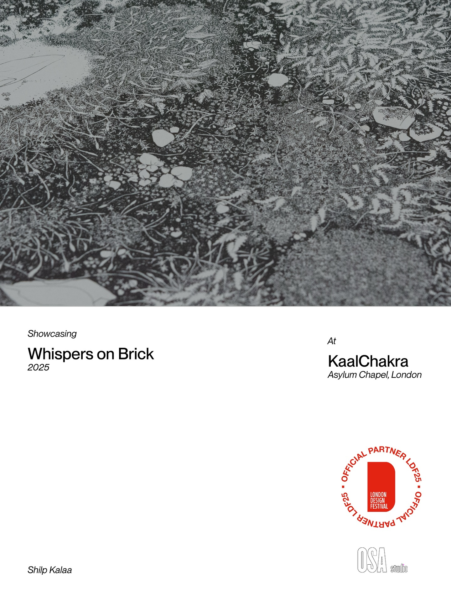
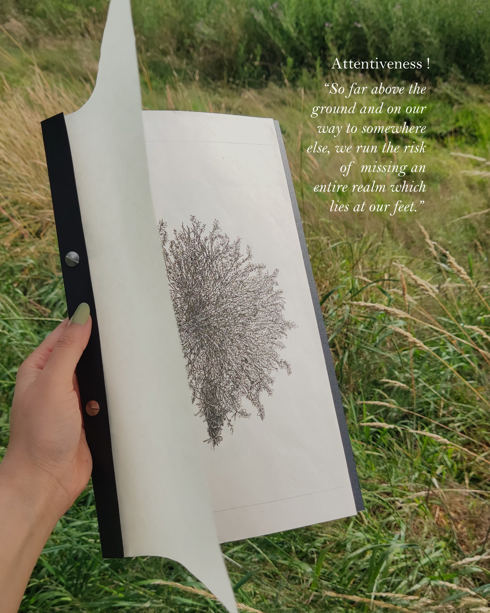
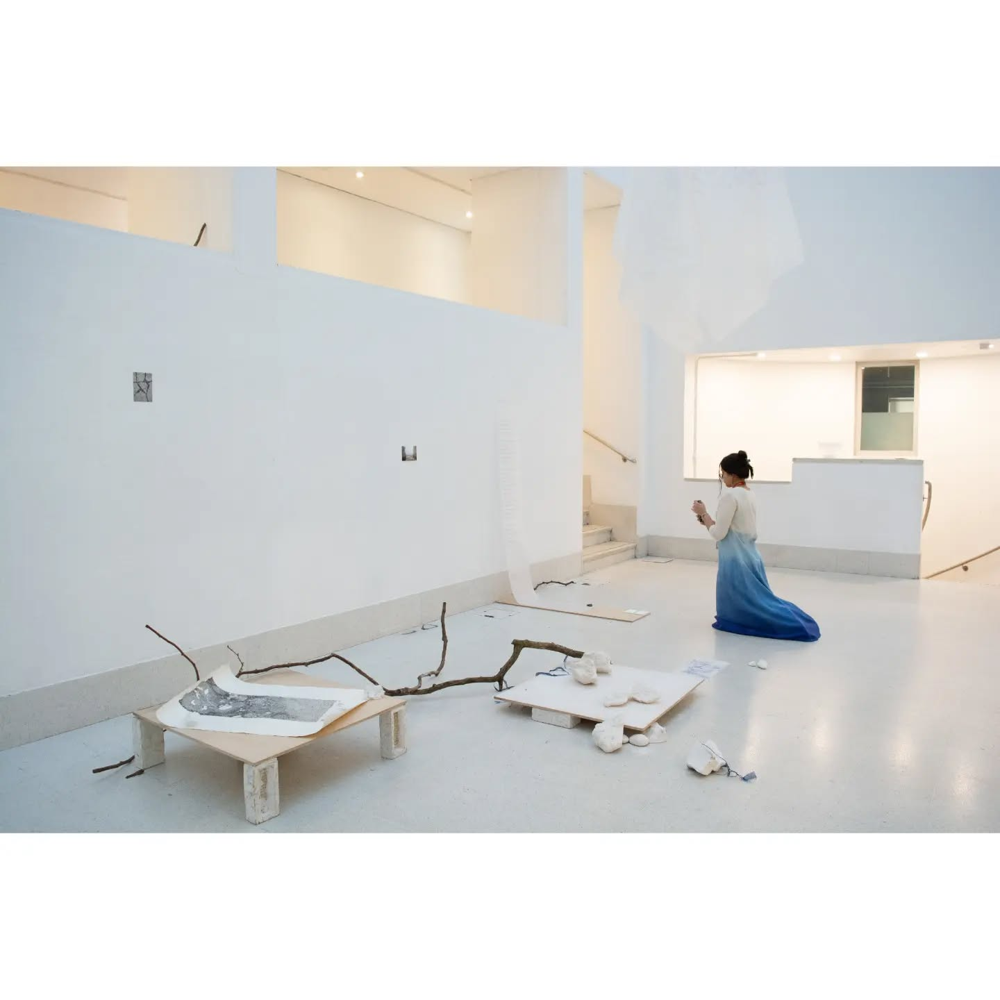
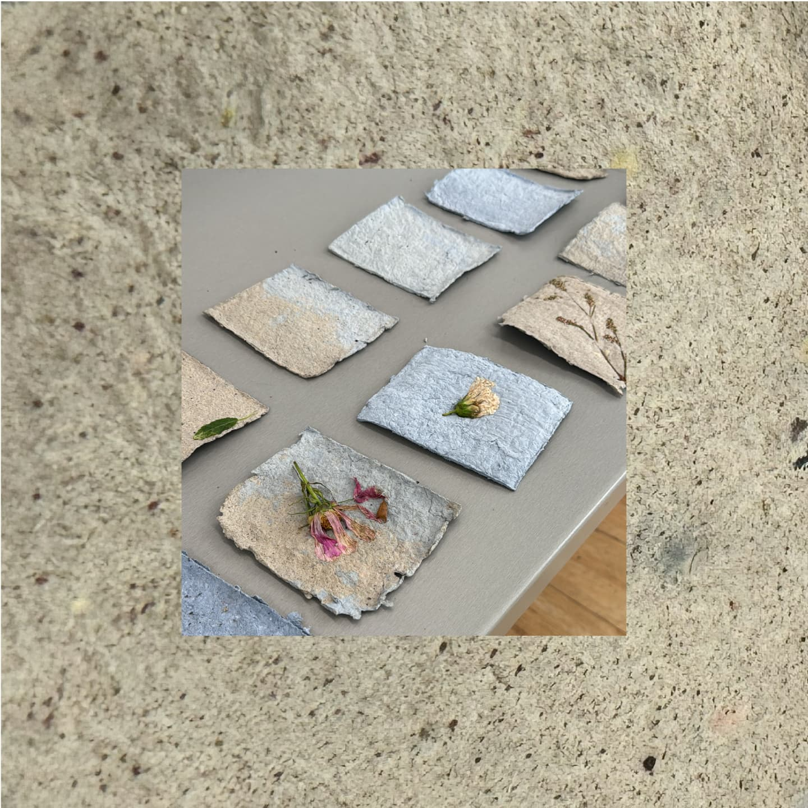

Projects
The drawings rarely stay on the wall.
They end up on the floor, in books, in other people's hands. Every project asks one thing of whoever comes. Come closer. Bend down. Stay a little longer than you planned.
2025 · Drawings, exhibition
Whispers on Bricks
Six months beside one boundary wall, watching moss settle where two bricks meet. Rain came and went. The moss dried to almost nothing and came back green, the way it has for longer than there have been walls.
The drawing keeps all of that. Go into it slowly, and listen for what the bricks are being told.
Shown at KaalChakra, Asylum Chapel, London, in September 2025.



2025 · Book and box · An ask of the city mosses
Watch Your Step
The title is the moss speaking. Watch your step. It is a small request from something that lives under your shoes.
The answer became a book and a box. Bound pages, loose plates, cards and field notes, all made to be opened slowly, out on the grass if you can.



2024 · Installation
On the floor
Drawings laid low among timber, paving, fallen branches and living moss. There is no way to see them standing up.
You crouch, the way you would over the real thing, and for a moment the gallery floor is a pavement after rain.



2024 · Workshops
Making paper
Pulp, petals, leaves, and many hands in the same cold water. A sheet of paper turns out to be a small landscape too.
Everyone leaves with one they made, still drying.

